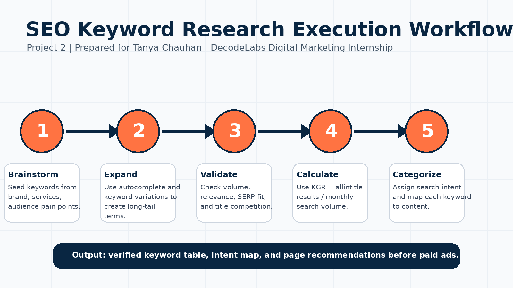
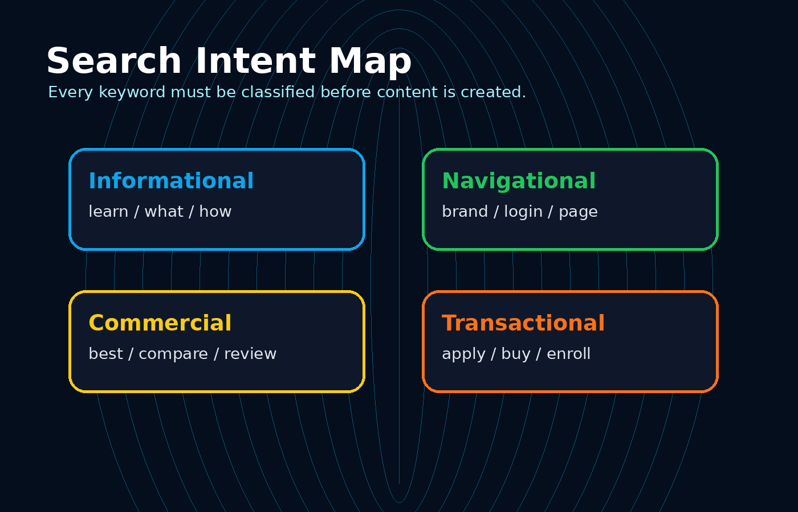

Input
User query and demand.
Digital Marketing Project 2
A complete internship-ready project that converts search intent into a clear content strategy.
Find relevant keywords, identify user intent, and suggest content ideas for a website or blog.
SEO logic
SEO is a pull strategy. Instead of interrupting people, it captures existing demand by answering the exact question typed into search engines.
User query and demand.
Algorithm checks relevance, quality and authority.
SERP ranking and clicks.
Workflow picture


Intent analysis
Informational users want knowledge. Navigational users want a specific page. Commercial users compare options. Transactional users are ready to act.
Keyword research table
| Keyword | Volume | KGR | Intent | Suggested Content |
|---|
Theory
Write SEO ideas as decisions, not guesses. Start with the audience problem, identify the search phrase, classify the intent, then explain why a specific page should be created. A strong explanation connects keyword evidence with business value.
“This keyword should be targeted because it is specific, has clear action intent, and can be answered with a focused landing page.”